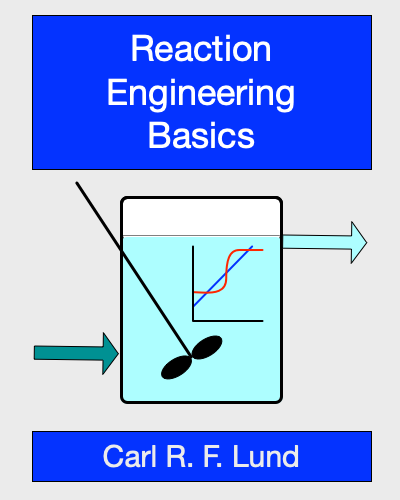

This page is a placeholder.
Reaction Engineering Basics is a book I am writing. When it gets closer to being finished, this page will be taken down, and the link you followed to get here will instead take you to the actual book.
In the mean time, here’s an excerpt from the Preface and the Table of Contents:
Reaction Engineering Basics is an introductory textbook on chemical kinetics and reaction engineering. There are many excellent introductory kinetics and reaction engineering textbooks. Like many other textbooks, Reaction Engineering Basics, limits kinetics data analysis problems to isothermal systems with a single reaction taking place (though it does not limit the analysis to systems where linear least squares can be used). However, as it moves into the area of reaction engineering, Reaction Engineering Basics is different from many other textbooks in two respects. First, Reaction Engineering Basics does not start with systems with single reactions taking place in isothermal reactors and then introduce systems with multiple reactions or systems requiring an energy balance in subsequent chapters. The reaction engineering section of Reaction Engineering Basics starts with systems that require mole and energy balances and that feature multiple reactions. Second, Reaction Engineering Basics differs from many other introductory kinetics and reaction engineering textbooks by using numerical methods to solve almost all of the problems it presents. The one exception is that analytic algebra is used when generating rate expressions for non-elementary reactions from proposed mechanisms for those reactions.
Reaction Engineering Basics was written for use in an undergraduate chemical engineering curriculum. The intended audience is students who have completed approximately two years of a four-year chemical engineering degree program. While very brief overviews of important topics are included, generally Reaction Engineering Basics assumes that readers have completed two semesters of general chemistry, a course on chemical engineering mass and energy balances and, ideally, a course on chemical engineering thermodynamics. Proficiency in algebra, calculus and differential equations is also assumed.
Preface
Basic Information
\(\quad\) 1. Reactions, Reactors and Reaction Engineering
\(\quad\) 2. Reaction Engineering Ethics and Safety
\(\quad\) 3. Measures of Reaction Progress
Rate Expressions
\(\quad\) 4. Reaction Rates and Rate Expressions
\(\quad\) 5. Reaction Mechanisms and Mechanistic Rate Expressions
Reactor Models
\(\quad\) 6. Reactor Design Equations
\(\quad\) 7. Reactor Response Functions
Kinetics Data Analysis
\(\quad\) 8. Generation and Analysis of Kinetics Data
\(\quad\) 9. Analysis of Kinetics Data from a BSTR
\(\quad\) 10. Analysis of Kinetics Data from a CSTR
\(\quad\) 11. Analysis of Kinetics Data from a PFR
Modeling Isolated Ideal Reactors
\(\quad\) 12. Response, Optimization and Design of Reactors
\(\quad\) 13. BSTR Analysis
\(\quad\) 14. SBSTR Analysis
\(\quad\) 15. Design of Non-Continuous Reactors
\(\quad\) 16. CSTR Analysis
\(\quad\) 17. PFR Analysis
\(\quad\) 18. Design of Continuous Reactors
Modeling Ideal Reactor Systems
\(\quad\) 19. Reactor Networks
\(\quad\) 20. Thermally Back-mixed PFRs
\(\quad\) 21. Recycle PFRs
Modeling Non-Ideal Reactors
\(\quad\) 22. Axial Dispersion Reactor Models
\(\quad\) 23. Segregated Flow Reactor Models
\(\quad\) 24. Zoned Reactor Models
Appendices
\(\quad\) A. Prerequisite Knowledge
\(\quad\) B. Notation and Sign Conventions
\(\quad\) C. Reaction Thermodynamics
\(\quad\) D. Reactor Heat Exchange
\(\quad\) E. Collision Theory
\(\quad\) F. Transition State Theory
\(\quad\) G. Ideal Reactor Models
\(\quad\) H. Solving Algebraic Equations
\(\quad\) I. Solving Initial-Value ODEs
\(\quad\) J. Parameter Estimation
\(\quad\) K. Solving Boundary-Value ODEs
\(\quad\) L. Solving Differential-Algebraic Equations